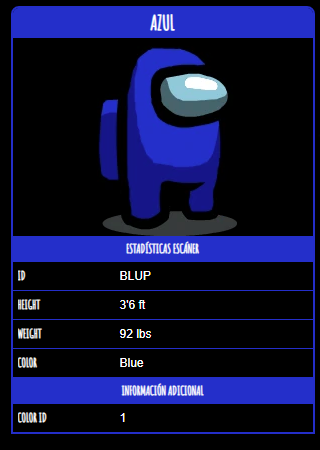

Azul

Azul es uno de los colores principales en Among us que el
jugador puede
personalizar.
Curiosidades
- Las apariciones de Azul en el arte oficial de Among us son escasas, ya que solo aparecen en dos fotos
promocionales.
- En la sección de "Cómo Jugar" Azul aparece reportando el cadáver de Amarillo y
luego
matado es por Blanco.